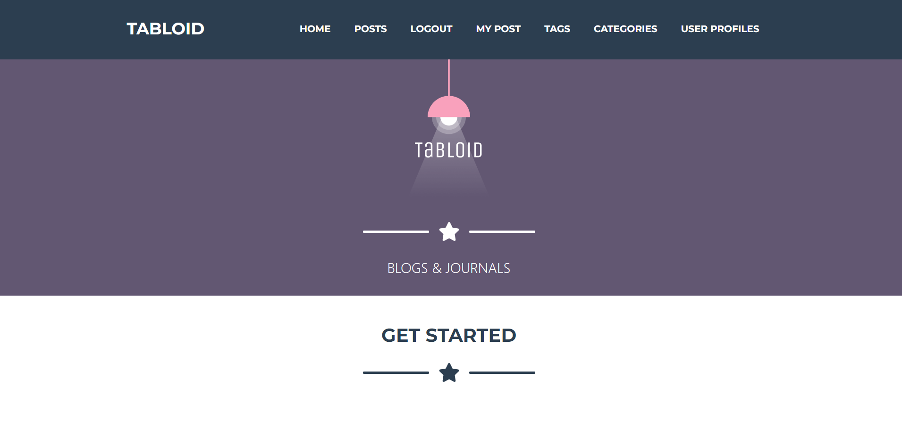
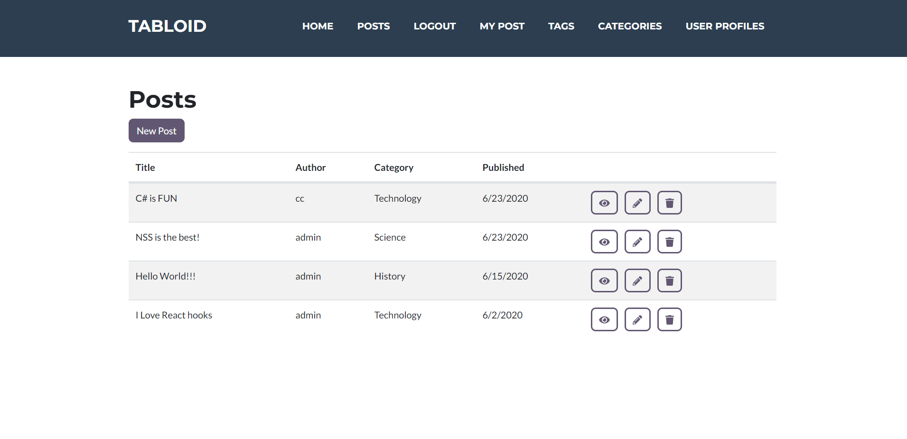
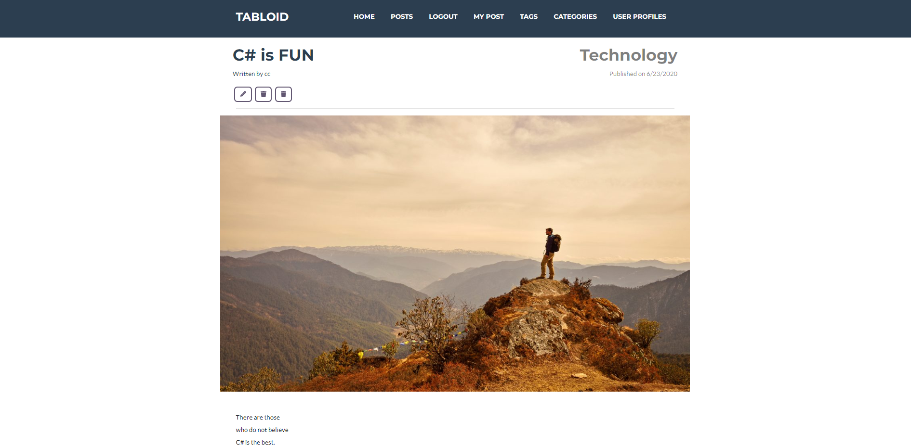

Dashboard - Once a user logs in, they will be directed to the dashboard. From here, users can navigate to all other pars of the app. They can view a list of posts, user profiles, post categories, post tags, and a list of posts created by that current user.
Posts - On the posts page, users can view a list of all posts created within the app. General users can view the details of a specific post. Admin users have the option to edit or delete a post.
Post Details - When a user clicks to view a post's details, they will be redirected to a page that displays additional information about the post.
